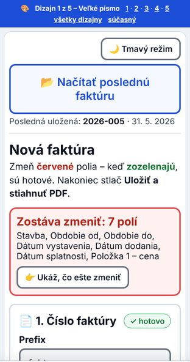
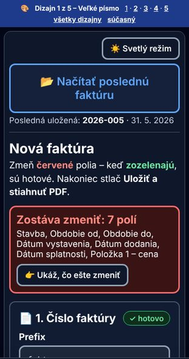
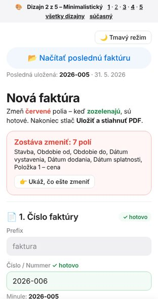
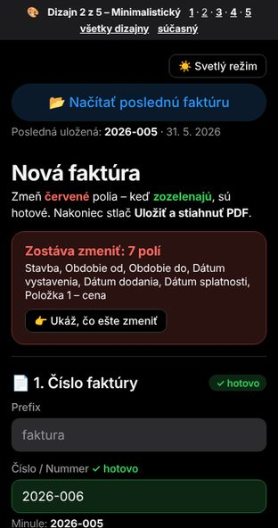
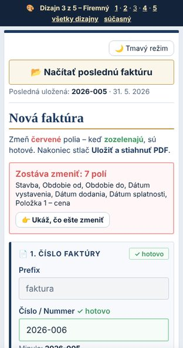
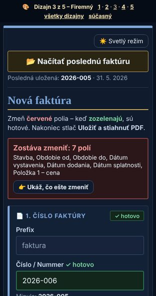
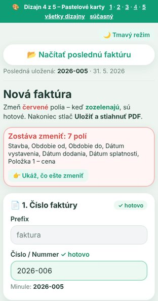
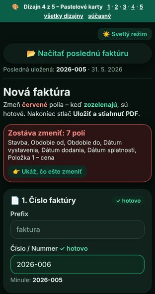
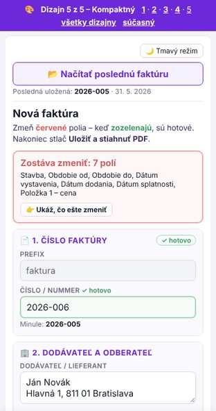
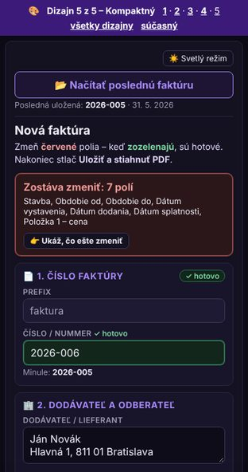

1 Veľké písmo
Veľký text, hrubé rámiky a veľké tlačidlá – najľahšie na čítanie, aj bez okuliarov.
Vyskúšať dizajn 1 →Všetky dizajny fungujú rovnako ako súčasná aplikácia – líšia sa len vzhľadom. Vľavo svetlý, vpravo tmavý režim. Vyskúšaj ich na mobile aj na počítači a vyber, ktorý sa najlepšie číta.
⚠️ Dizajny používajú tie isté uložené faktúry ako súčasná aplikácia. Ak v nich faktúru uložíš, uloží sa naozaj (dá sa zmazať v „Staršie faktúry“ – presunie sa do koša).


Veľký text, hrubé rámiky a veľké tlačidlá – najľahšie na čítanie, aj bez okuliarov.
Vyskúšať dizajn 1 →

Čisto biely, veľa vzduchu, bez rámikov a tieňov – pokojný a moderný.
Vyskúšať dizajn 2 →

Tmavomodrá so zlatou, ostré rohy a pruhy pri sekciách – pôsobí ako účtovný program.
Vyskúšať dizajn 3 →

Mäkké zelené farby, biele karty s tieňom a zaoblené tlačidlá – priateľský a hravý.
Vyskúšať dizajn 4 →

Menšie písmo a tesnejšie rozloženie – viac údajov na obrazovke naraz, vhodné na počítač.
Vyskúšať dizajn 5 →